Configurando o Windows 10 Pro
Este documento é para ajudar os técnicos a fazer configurações necessárias do windows.
Configuração Plano de Energia
Digite painel de controle no menu iniciar que fica na barra de tarefas após isso, selecione exibir ícones grandes.
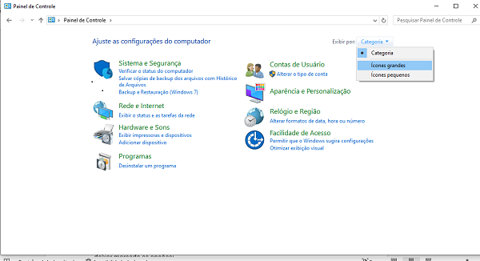Selecione opções de Energia
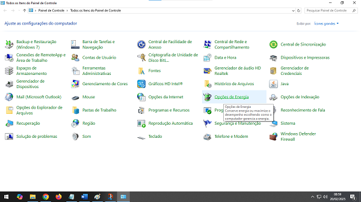Em opções de energia, marque alto desempenho e do lado dele, selecione alterar Configurações do plano.
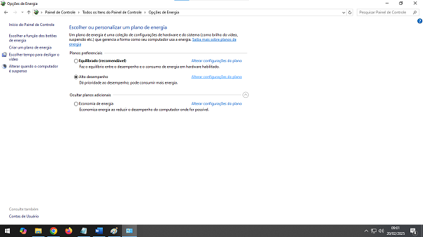Em alterar configurações do plano, selecione nunca para desligar vídeo e suspender atividade do computador e após isso, selecione Alterar configurações de energia avançada.
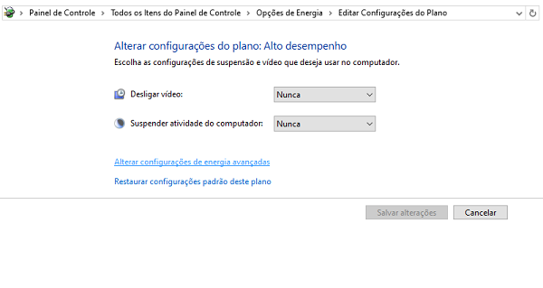Em Alterar configurações de energia avançadas, vamos configurar as seguintes opções: Disco Rígido, Configuração de tela de fundo da área de trabalho, Suspender, Configurações de USB, Vídeo.
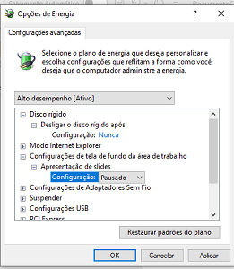Em Suspender, selecione as opções nunca para: Suspender depois de, hibernar após selecione nunca.
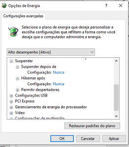Em configurações de USB, em configuração de suspensão seletiva USB, marque desabilitado.
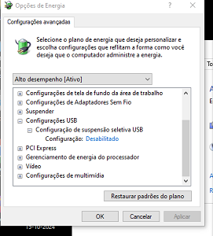Em vídeo, desligar o monitor após, selecione nunca. Aplicar e ok.
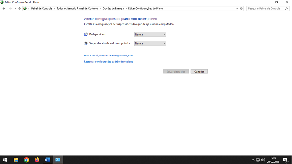retorne 2 paginas para configurar segurança e manutenção
Segurança e Manutenção
Em ajustar as configuraçõe do computador, selecione segurança e manutenção.
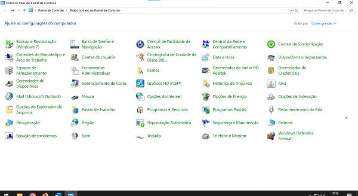Selecione Alterar configurações de controle de conta do usuário
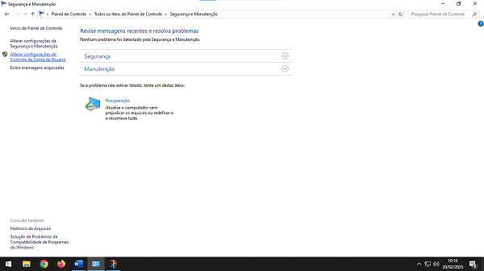Selecione para nunca notificar e em seguida selecione ok
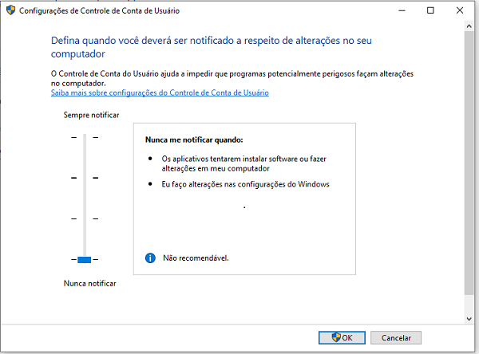Ajustar a aparência e o desempenho do Windows
Digite no menu iniciar Desempenho, vai aparecer "Ajustar para obter o melhor desempenho". Selecione personalizar e deixe marcado somente os items como está na imagem abaixo. Aplicar e ok.
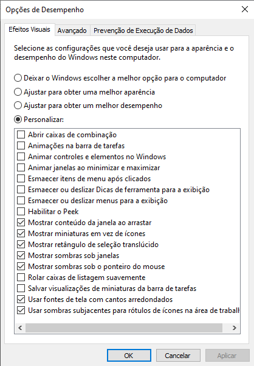Atualização de drivers da placa mãe
Em menu iniciar, digite(Gerenciador de dispositivos). Verifique se tem alguma plaquinha amarela. Caso tenha ou não, será necessário verificar no site do fabricante da placa mãe tem sem atualizações. Geralmente na placa mãe possui a marca e modelo da placa. Copie e cole esse modelo no navegador.